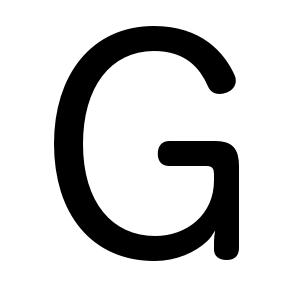

18й
Зеленоградский
Полумарафон
21.1 • 7 • экиден
Зеленоградский
Полумарафон
21.1 • 7 • экиден
25
мая'14
мая'14
Зеленоградский полумарафон проводится с 1997 года и является одним из самых массовых полумарафонов России. По итогам 2003 года полумарафон стал вторым в России по количеству участников.
В 2007 году Зеленоградский полумарафон вступил в Международную ассоциацию марафонов и пробегов (ASSOCIATION OF INTERNATIONAL MARATHONS AND ROAD RACES – AIMS). В связи с этим зеленоградская трасса получила международный сертификат. Теперь на ней можно фиксировать мировые рекорды, которые будут признаны Международной федерацией легкой атлетики.
В разные годы в программе полумарафона были представлены различные несоревновательные забеги, например, VIP-забег на «Зеленоградскую милю» длиной в 1958 м, женский забег «Наши любимые» на 2 км, детский мини-марафон, забег на 7 км «С добрым утром, Зеленоград!». Три последних пробега проводятся и по сей день.
Под эгидой полумарафона в Зеленограде собираются любители бега и квалифицированные спортсмены из большинства субъектов Российской Федерации. Среди последних – заслуженные мастера спорта (Галина Еремина, Анатолий Кругликов и Ирина Коваль), мастера спорта международного класса (Любовь Моргунова, Ирина Тимофеева, Алина Иванова, Светлана Понаморенко, Зинаида Семенова, Лилия Яджак, Ирина Сафарова, Николай Керимов, Сергей Емельянов, Сильвия Скворцова, Лидия Василевская, Сергей Лукин, Александр Васильев). Некоторые из них являются победителями и призерами крупных международных пробегов, чемпионами и призерами страны, Европы, мира.
Главная особенность соревнования - это доступность для широкого круга любителей бега разного возраста и уровня подготовки. Участники, которые финишируют и укладываются в лимит времени, награждаются памятными подарками. Данное мероприятие имеет важное социальное значение для развития массовых видов спорта в России.
Для того чтобы принять участие в нашем полумарафоне, вам необходимо пройти процедуру регистрации.
Регистрация осуществляется на дистанции:
Уважаемые участники, обращаем ваше внимание на то, что для того чтобы стать участником нашего забега необходимо заполнить, заполнивший анкетку на сайте, а лишь тот, кто оплатит стартовый взнос.
Трасса пролегает там-то там-то и все хорошо и даже немного лучше. Главная особенность соревнования - это доступность для широкого круга любителей бега разного возраста и уровня подготовки. Участники, которые финишируют и укладываются в лимит времени, награждаются памятными подарками. Данное мероприятие имеет важное социальное значение для развития массовых видов спорта в России.
От всей души благодарим наших спонсоров за поддержку. Без вас нихрена бы не получилось.
Для участие в 18-ом Зеленоградском полумарафоне вам необходимо заполнить регистрационную форму (см.ниже), после чего вам на почту будет отправлен алгоритм дальнейших действий. В случае, если у вас нет электронной почты, посмотреть алгоритм оплаты стартового взноса вы можете в разделе «Участники» → «Условия участия». Обращаем ваше внимание на то, что регистрация на сайте является предварительной. Участник подавший заявку появляется в списке участников лишь после того, как оплатит стартовый взнос.